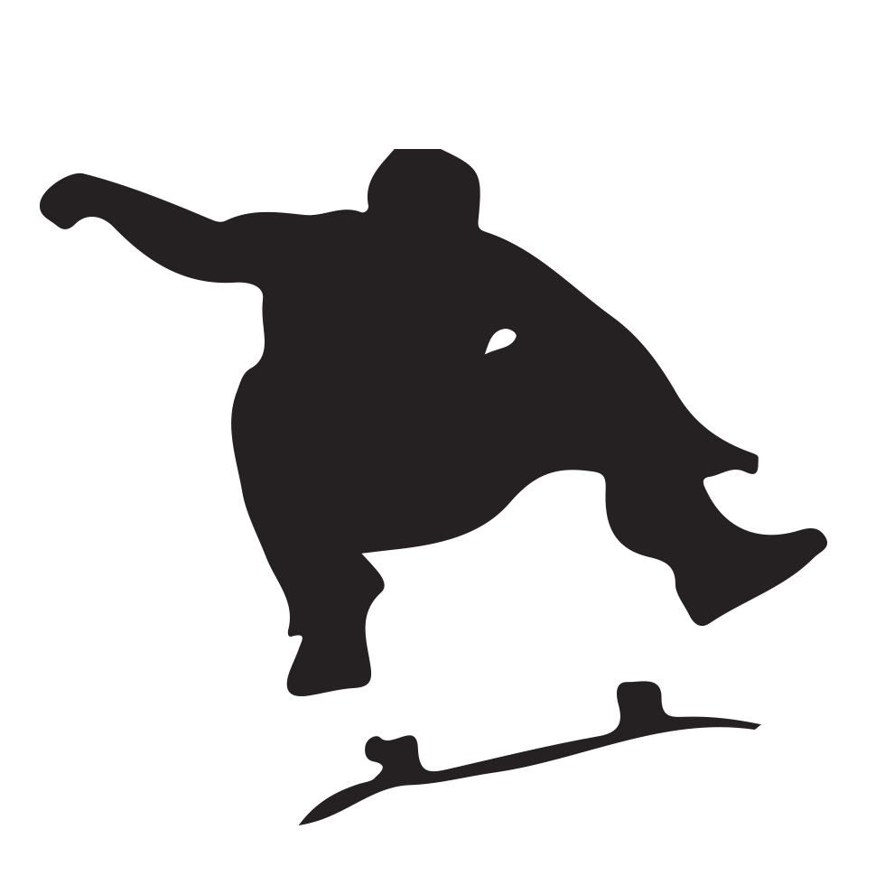

“世界上最酷的运动之一”
滑板被称为是“世界上最酷的运动”而究竟是谁第一个创造了滑板已无法考证，但可以确定的是，滑板最初的起源是与加州的冲浪爱好者们有关，冲浪十分受地理与气候条件的影响，于是浪人们决定在陆地上模拟这项运动。
一块木板底部装上两排轮滑的铁质轮子，这就是第一代滑板。当时玩滑板的几乎全为冲浪族群，为了在没有浪时仍能练习脚感，所以当时的滑板动作几乎与冲浪相似，多为平面动作。60年代，随着朋克思想与新浪潮音乐的兴起，滑板不仅仅满足于平面运动，许多公司开始举办比赛，场地越来越多样，泳池、斜坡、半管等，玩法也越来越丰富。
要说滑板最重要的转变，一定是在70年代。60年代的滑板轮子多为铁轮或是黏土烧制而成，十分笨重，且无法转向，没有任何弹性。而Frank Nasworthy，参观朋友爸爸橡胶工厂后，尝试用橡胶来制作滑板轮子，大大改善了滑板的避震性。70年代末期，一位叫做Alan Gelfand的滑板爱好者，发明了一种滑板技巧，给滑板运动带来了革命性的进步，这个人的名字也许大家很陌生，但是他的小名，只要接触过滑板的人都会知道——Ollie，滑板入门级动作。
80年代的滑板的形状越来越丰富，但同时受到的阻力也越来越大。技巧越多，也意味着危险性越大，70年代末种种运动伤害事件让美国政府开始抵制，滑板由此带上了叛逆色彩，并且走上街头。将所有街头障碍物当做自己技巧的磨炼，这时，两头翘起、形状对称的滑板就出现了，也就是我们现在熟悉的双翘滑板，也称街式滑板。
80年代末，由于美国电影《危险之至》在中国各大城市上映，滑板运动的魅力深深迷住了许多中国青少年。滑板早已不是一个单纯的运动，而是一个文化。2020年东京奥运会滑板也首次作为比赛项目。
